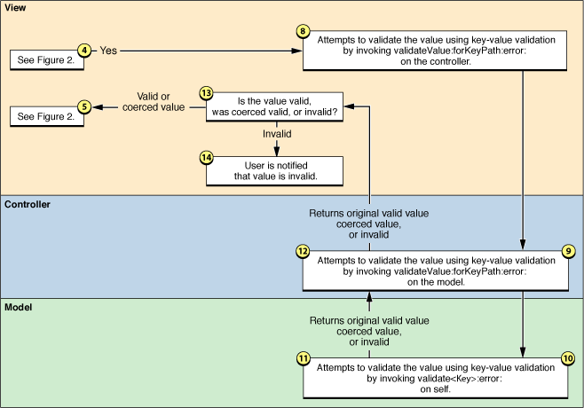

Bindings Message Flow
A binding has a number of possible options that can be configured, and many of these will influence the flow of messages between the controller, view and model objects. Value transformers, NSFormatters, key-value validation, placeholders, selection value markers, and other binding options, all affect changes made in the user interface, and in the model values. This article describes the flow of messages between the objects for common interactions with the view, controller, and model objects.
Contents:
Changing the Value of a Model Property
User Updates a Value in the User Interface
Changing the Value of a Model Property
The diagram in Figure 1 shows the flow of messages between the model, controller and view objects in response to changing the value of a property in the model object.
Specifically, this example is of an NSTextField with its value binding bound to an NSObjectController’s selection using the selection.firstName key path. The NSObjectController’s content binding is bound to a model object that encapsulates a person’s name and address.
A property of the model object is changed using a key-value-observing compliant means.
The objects that are registered with the model object to receive key-value observing change notifications are sent an
observeValueForKeyPath:ofObject:change:context:message by the model object’s inherited key-value observing implementation.The controller receives the
observeValueForKeyPath:ofObject:change:context:message. The controller is registered with the model object as a result establishing the binding to the model object.The controller tests to see if the controller-model binding has the “Handles as Compound Value” option set. If “Handles as Compound Value” is enabled, proceed to Step 13.
The controller generates a key-value observing message for the value that has changed, mapping the model key-path to the appropriate controller key-path. For example, if the key path of the property in the model object is “
firstName” then the key-value observing change is mapped to “selection.firstName”.The objects that are registered with the controller object to receive key-value observing change notifications are sent an
observeValueForKeyPath:ofObject:change:context:message by the controller object’s inherited key-value observing implementation.The view receives the
observeValueForKeyPath:ofObject:change:context:message. The view is registered with the controller object as a result establishing the binding to the controller object.The view objects gets the current value for the changed property from the controller using key-value coding.
The view tests the value retrieved in Step 8. If the value is one of the selection markers, or
nil, proceed to Step 15.If the view-controller binding specifies a value transformer, the value retrieved in Step 8 is passed to the value transformer’s
transformedValue:method. The value returned by thetransformedValue:method is passed to the next step.The view sets its contents to the updated, possibly transformed, value using the view’s
setObjectValue:method.If the view has an NSFormatter attached to it, the value is formatted by the NSFormatter instance. Proceed to Step 17.
If the controller-model binding specifies a value transformer the entire model is transformed using the
transformedValue:method.The controller generates a key-value observing message, mapping the key path to the selection. This generates the same type of key-value observing change notification that would result in replacing the content object. Proceed to Step 7.
If the binding specifies a placeholder for the view-controller binding for the value marker it is used in Step 16. If no custom placeholder value is specified as part of the binding, and a custom default placeholder has been set for the view class and this particular binding, it is used in Step 16. Otherwise, flow returns to Step 11.
An application can assign a custom default placeholder for a class and binding combination using the NSPlaceholders class method
setDefaultPlaceholder:forMarker:withBinding:.The placeholder value is set for the view using the
setPlaceholderString:orsetPlaceholderAttributedString:method.The updated value is displayed in the user interface.
User Updates a Value in the User Interface
The diagrams in Figure 2 and Figure 3 show the flow of messages between the model, controller and view objects in response to changing the value of a property in the model object.
Figure 3 Message flow in response to the user changing a value in an NSTextField, view-controller validation
As in ““Changing the Value of a Model Property”” this specific example is of an NSTextField with its value binding bound to an NSObjectController’s selection using the selection.firstName key path. The NSObjectController’s content binding is bound to a model object that encapsulates a person’s name and address.
The user enters a new value into the NSTextField.
If an NSFormatter is attached to the NSTextField the formatter attempts to validate the value. If the formatter fails to validate the value it provides failure feedback and returns control to the user.
The view-controller binding option “Continuously Updates Value” determines when the view notifies the controller of changes in the text field. If it this option is specified, the controller will be updated for each keystroke. If it is disabled then the controller is only updated when the user hits return, tab, or the text field loses first responder status.
If the view-controller binding specifies a value transformer and the value transformer supports inverse transformations, the new value is transformed using the
inverseTransformedValue:method. The value returned by theinverseTransformedValue:method is passed to the next step.If the view-controller binding option “Validates Immediately” is enabled, then proceed to Step 8.
The view object invokes
setValue:forKeyPath:on the controller object, passing the new, possibly transformed, object value and the binding’s key path as arguments.If the controller-model binding option “Handle as Compound Value” is enabled, then proceed to Step 15.
The controller invokes
setValue:forKeyPath:on the model object, passing the new content value from Step 5 and the key path for the property in the model object as arguments. Proceed to Step 23.The view attempts to validate the value from Step 4 using key-value validation. It does this by invoking
validateValue:forKeyPath:error:on the controller, passing the proposed value, the binding’s key path, and an NSError pointer reference as arguments.The controller receives the
validateValue:forKeyPath:error:message and forwards the validation request to the model object’svalidateValue:forKeyPath:error:implementation, modifying the key path so that it references the appropriate model object property.The model object receives the
validateValue:forKeyPath:error:message and attempts to validate the proposed value by invokingvalidate<Key>:error:on self. The specific method signature will be dependent on the name of the property.The model object’s implementation of
validate<Key>:error:returns a Boolean value indicating if the value was valid. If the result isYES, then the proposed value was valid, or was replaced with a validated value. If the result isNO, then the proposed value is invalid and the error reference should contain a description of why the validation failed.The validation result, value, and a possible error are returned by the model’s implementation of
validate<Key>:error:to the controller’svalidateValue:forKeyPath:error:method.The validation result, value, and a possible error are returned by the controller’s
validateValue:forKeyPath:error:method to the view.If the validation result is
YES, then the valid or coerced value are returned to Step 5, otherwise proceed to Step 14.The user is notified that the value is invalid.
How the error is presented to the user is dependent on the view-controller binding’s “Always Presents Application Modal Alert Panels” option. If this option is enabled, then the error is displayed to the user as a modal alert panel. If it is not enabled, then the error is presented to the user as a sheet.
The controller gets the current content object using
valueForKeyPath:on the model object.This is the message flow path for “Handle as Compound Value”. The original content object specified by the
contentObject,contentArrayorcontentSetbinding is retrieved from the model, transformed, the new value from the user inserted, the content object is inverse transformed, and set as the new content object.If the controller-model binding specifies a value transformer the content object retrieved in Step 15 is transformed using the
transformedValue:method. The value returned by thetransformedValue:method is passed to the next step.The controller invokes
setValue:forKeyPath:on the retrieved, possibly transformed, content object. The value from Step 5 and the key path for the property in the model object as arguments.If the controller-model binding specifies a value transformer and the value transformer supports inverse transformations, the content object from Step 17 is transformed using the
inverseTransformedValue:method. The value returned by theinverseTransformedValue:method is passed to the next step.If the controller-model binding option “Validates Immediately” is enabled, proceed to Step 20, otherwise proceed to Step 22.
The controller attempts to validate the new, possibly transformed, content object by invoking
validateValue:forKeyPath:error:on the model object.If
validateValue:forKeyPath:error:returnsYES, then the valid or coerced valid value is passed to Step 22. If the result is invalid, proceed to Step 21.The user is notified that the value is invalid.
How the error is presented to the user is dependent on the controller-controller binding’s “Always Presents Application Modal Alert Panels” option. If this option is enabled, then the error is displayed to the user as a modal alert panel. If it is not enabled, then the error is presented to the user as a sheet.
The controller invokes
setValue:forKeyPath:on the model object using the new, possibly validated content object and the content key path as arguments.The updated value is now stored in the model object.
Changing the model object results in key-value observing change notifications being sent to the observers of the model property.
© 2003, 2009 Apple Inc. All Rights Reserved. (Last updated: 2009-03-08)